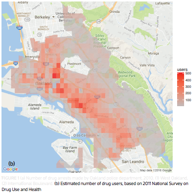
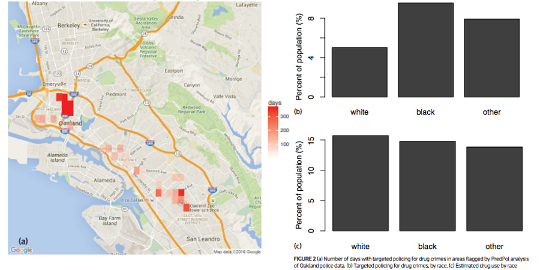
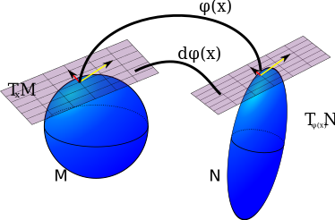
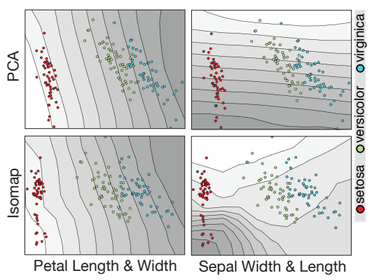
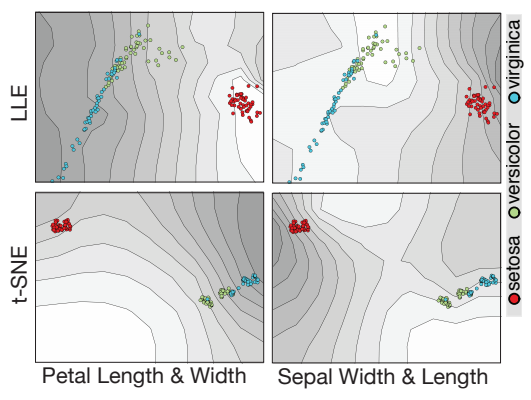
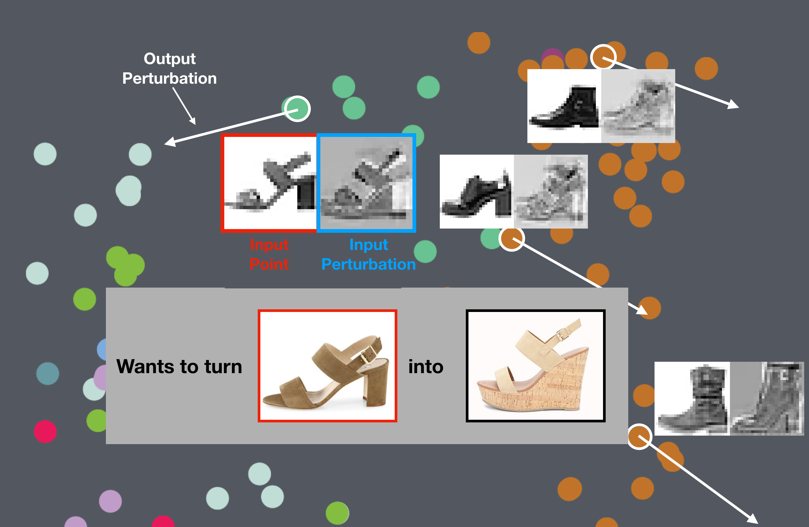
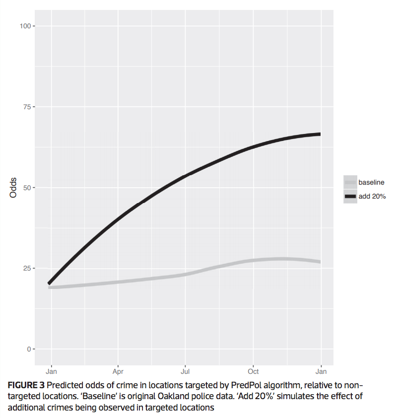
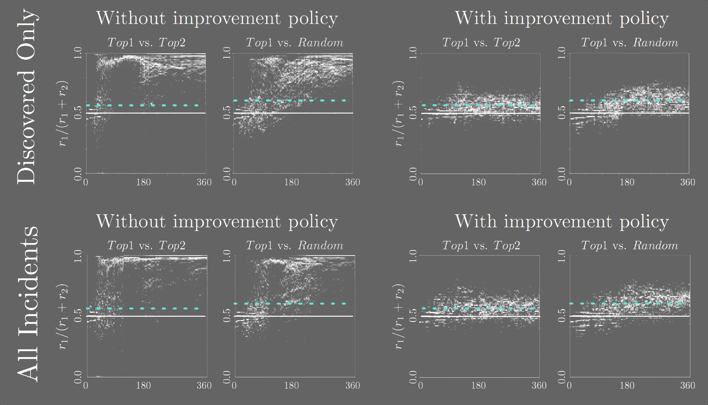

DATA SCIENCE, HUMANELY


Things that keep me up at night
Reinhart-Rogoff
This work was widely cited as a justification for the austerity measures in the EU

Herndon-Ash-Pollin
This is the world we created!

The data science infrastructure we built is not humane
Predictive Policing
Deployed in major cities: Santa Cruz, Los Angeles, etc.
Lum and Isaac, Significance, 2016

Lum and Isaac, Significance, 2016
This is the world we created!

The data science infrastructure we built is inhumane
Our ability to automate has far outpaced our ability to validate
Automation is not going away: we ought to empower people in this new context
DimReader: Axis Lines that Explain Non-Linear Projections


InfoVis 2018
Rebecca Faust, David Glickenstein, Carlos Scheidegger
t-SNE plots are beautiful, but what are they showing us?
{kind=link}
Shouldn't our tools provide mechanisms for inspecting their own behavior?
A simpler example: the iris dataset
| Sepal Length | Sepal Width | Petal Length | Petal Width | Species |
|---|---|---|---|---|
| 5.1 | 3.5 | 1.4 | 0.2 | setosa |
| 4.9 | 3.0 | 1.4 | 0.2 | setosa |
| 4.7 | 3.2 | 1.3 | 0.2 | setosa |
| ... | ||||
| 7.0 | 3.2 | 4.7 | 1.4 | versicolor |
| 6.4 | 3.2 | 4.5 | 1.5 | versicolor |
| 6.9 | 3.1 | 4.9 | 1.5 | versicolor |
| ... | ||||
| 6.3 | 3.3 | 6.0 | 2.5 | virginica |
| 5.8 | 2.7 | 5.1 | 1.9 | virginica |
| 7.1 | 3.0 | 5.9 | 2.1 | virginica |
| ... |
t-SNE visualization
Tangent maps of algorithms

author: "User from reddit", CC BY 3.0
Tangent maps of algorithms
- First-order understanding: visualizations should inform us about the local context of the data
- Influence functions and robust statistics, tools from 1970s: if this point had been more important, how would the model change?
- Counterfactual reasoning: "how would Y behave had X been different?". See Google PAIR's What If?
How: Automatic Differentiation ("autodiff")
- Differentials are context-free, so rules are syntactic and local
- Typical program evaluation: given expression and values of containing variables, you can deduce the value of the expression
- With autodiff: given expression, values of containing variables, and values of their derivatives, you can deduce the value of the expression, and the value of its derivatives
Using the tangent map
Option 1: provide a perturbation
- This is the mode I've shown you so far
- User picks a direction that makes intuitive sense, DimReader measures the direction of change in the projected points, and reconstructs the axis
This lets us compare DR methods

This lets us compare DR methods

But what if there's no obvious direction?
But what if there's no obvious direction?
- Option 2: let DimReader infer a good perturbation
- We have access to the entire tangent map, let's do math on it
The structure of the tangent map for DR problems
- The tangent map is (effectively) sparse and block-structured.
- $$\left ( \begin{array}{cccc} B_1 & 0 & \cdots & 0 \\ 0 & B_2 & \cdots & 0 \\ \vdots & \vdots & \ddots & \vdots \\ 0 & 0 & \cdots & B_n \end{array} \right ) $$
- If the DR method sends points from $R^k$ to $R^d$, then each block $B_i$ is $d \times k$
Eigenproblems for Perturbation Discovery
- The tangent map is linear, and we will be seeking perturbation directions that maximize some criterion
- We focus on the following formulation:
- $$\textrm{argmax}_{p \in R^{d \times n}} \sum_i || B_i p_i ||^2 - \lambda \sum_i \sum_j ||p_i - p_j||^2 S(i,j)$$
- $$\textrm{s.t.}\ ||p||^2 - 1 = 0$$
Eigenproblems for Perturbation Discovery
- $$\textrm{argmax}_{p \in R^{d \times n}} \sum_i || B_i p_i ||^2 - \lambda \sum_i \sum_j ||p_i - p_j||^2 S(i,j)$$
- $$\textrm{s.t.}\ ||p||^2 - 1 = 0$$
- $B_i$ holds the blocks of the tangent map
- $S$ encodes similarity between projection positions
- $\lambda$ is a user-specified tradeoff parameter
Results: t-SNE projection on MNIST-Fashion

Results: t-SNE projection on MNIST-Digits

Results: t-SNE projection on Iris dataset
Results: t-SNE projection on Iris dataset
Outlook
- Can we design novel DR methods that yield good DimReader plots?
- What other visualization methods would benefit from first-order information?
Runaway Feedback Loops in Predictive Policing
FAT* 2018
Danielle Ensign, Sorelle Friedler, Scott Neville, Carlos Scheidegger, Suresh Venkatasubramanian
Predictive Policing
Previous Work
- Lum and Isaac, 2016: What happens when predictive policing systems are trained on biased data?
Previous Work
- Lum and Isaac, 2016: What happens when predictive policing systems are trained on biased data?
Does targeted predictive policing cause feedback?

Our contributions
- A simple model in which such feedback loops happen: Pólya-Eggenberger urns
- A mitigation mechanism that solves the problem in the simplified model
- Experimental evidence that this feedback loop explains Lum and Isaac's observations
Goals, Assumptions
- Goal: Effective policing - A region with fraction $\alpha$ of the crime should receive $\alpha$ of the policing effort
- Assumption: Predictive Model - Policing happens by visiting regions proportionally to probability estimated by model
- Assumption: Limited context - we only store crime counts
- Assumption: Truth in data - Policing uncovers crime exactly at the rate of crime occurrence
Pólya-Eggenberger Urns
- Start with an urn containing $r$ and $b$ red and black balls
- Repeat:
- Draw a ball at random from urn, note its color
- If color was red, add $rr$ red balls, and $rb$ black balls. if black, add $br$ red balls, and $bb$ black balls.
- $$\left ( \begin{array}{cc} rr & rb \\ br & bb \end{array} \right )$$
Pólya-Eggenberger Urns
- Pólya-Eggenberger Urns are reasonable models for predictive policing
- Different colors correspond to different regions
- As more crime happens in one area, we should direct more effort to that area
The simple case: Pólya Urn
- Consider the following update matrix: $\left ( \begin{array}{cc} 1 & 0 \\ 0 & 1 \end{array} \right )$
- Let's run this process 50 times
The simple case: Pólya Urn
- Consider the following update matrix: $\left ( \begin{array}{cc} 1 & 0 \\ 0 & 1 \end{array} \right )$
- Let's run this process 10,000 times
- What about $\left ( \begin{array}{cc} 2 & 0 \\ 0 & 1 \end{array} \right )$ ?
- What about $\left ( \begin{array}{cc} 2 & 0 \\ 0 & 1 \end{array} \right )$ ?
What's going wrong?
- As police record more crime in a region, they're more likely to go there
- This makes sense
- But as police is more likely to go to a region, they're also more likely to see crime there!
- This is the crux of the problem
Intuition
- If we often police $a$, then we already expect crime at $a$, and shouldn't (relatively) be surprised to see crime at $a$
- If we're twice as likely to go to $a$ than $b$, then we should be half as willing to count our observations there
- With this modified urn, the ratio of balls will always converge to the ratio of the diagonal values
- And hence, no feedback loops
Two explanations
- If we think of policing as "surveying crime", then our mitigation strategy is exactly the Thompson-Horvitz estimator for unequal-probability survey sampling
- If we think of the decision of where to go as tossing a biased coin, then our mitigation strategy for recording unbiased observations is exactly Von Neumann's classic trick for getting unbiased tosses from biased coins
- What about $\left ( \begin{array}{cc} 2 & 0 \\ 0 & 1 \end{array} \right )$ ?
- What about $\left ( \begin{array}{cc} 2 & 0 \\ 0 & 1 \end{array} \right )$ ?
But does this actually explain Isaac and Lum's results?

Limitations, Caveats
- Our findings are not unassailable evidence that PredPol is broken
- More importantly, our mitigation strategy is not evidence that "now PredPol is fixed"
- We think of it as a serious threat to validity and an explanation mechanism, not as a bugfix
- We also think that batch learning is fundamentally broken in this setting (see our followup ALT paper for a bandit approach)
Acknowledgments
- Without William Isaac and Kristian Lum's willingness to help and share their results, this would have been literally impossible to write
Where to now?
- We build inhumane systems at our peril
- Worse yet, we build inhumane systems at the peril of those powerless to contest the system's decisions
- We can choose to build a better world
Thank you!
https://cscheid.net
https://hdc.cs.arizona.edu
cscheid@cs.arizona.edu